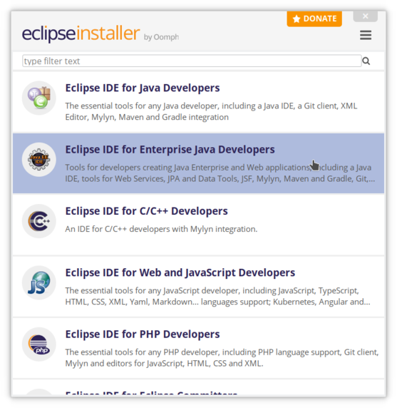
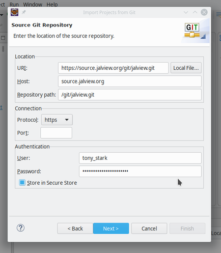
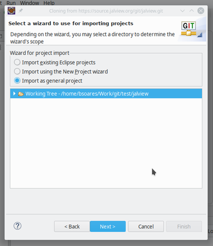
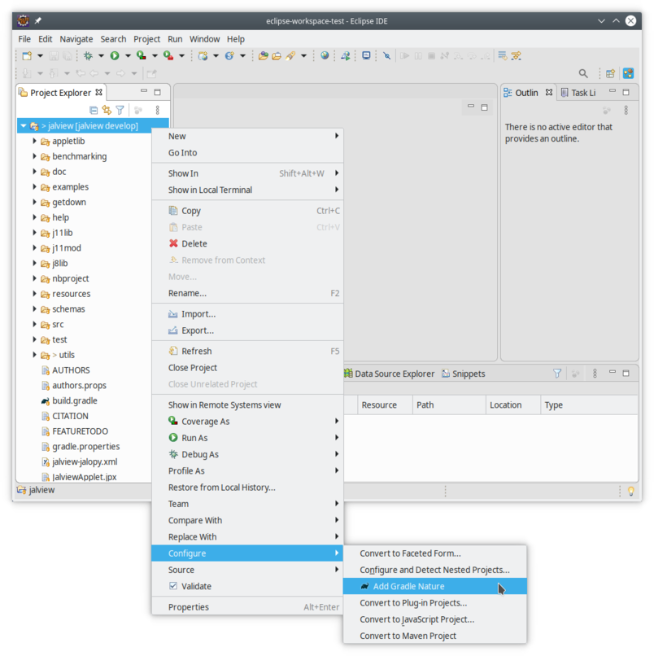

# download
git clone http://source.jalview.org/git/jalview.git
# compile
cd jalview
gradle shadowJar
# run
java -jar build/libs/jalview-all-*-j11.jar
# and/or create launcher
gradle getdown
# use launcher
cd getdown/files
java -jar getdown-launcher.jar . jalview
To get set up using only the Eclipse IDE (https://www.eclipse.org/) then please see the section Setting up in Eclipse IDE
The method here is described in terms of using a command line. You can easily do this on linux or in a Terminal window in macOS. You can do it in Windows.
The versions and installation methods here are just suggestions (which we have tested so are known to work). If you need or wish to use different implementations (particularly you might need a bespoke JDK if you are on an exotic architecture) then the general build instructions should work with any gradle 5+. You should be able to compile the bytecode with any JDK Java 11+. The resulting bytecode (in particular the shadow jar) should be runnable in any JRE Java 1.8+. Remember that because Jalview and the getdown launcher are Java bytecode you can build on one system where you might have gradle, and run on another where you don't (JRE 1.8+ required).
We recommend obtaining an OpenJDK JDK 11 (since 11 is the long term support release) from AdoptOpenJDK: https://adoptopenjdk.net/?variant=openjdk11&jvmVariant=hotspot, either the Installer or .zip/.tar.gz variants whichever you prefer (if you're not sure, choose the Installer).
Alternative/CLI install of AdoptOpenJDK 11
You can also install adoptopenjdk11 using either
brew(macOS),choco(Windows) (see the section ongradleandgitfor more informaiton onbrewandchoco) oryumorapt(Linux):alternative for MacOS and Homebrew
brew tap adoptopenjdk/openjdk brew cask install adoptopenjdk11alternative for Windows and Chocolatey
choco install adoptopenjdk11alternative for Linux with yum/apt
You should be able to install the latest (or sufficiently recent) versions of gradle and git using your OS package manager.
we recommend using brew, which can be installed following the instructions at https://brew.sh/.
After installing brew, open a Terminal window and type in (using an Administrator privileged user):
brew install gradle git
or if you aready have them installed but need to upgrade the version:
brew upgrade gradle git
we suggest using the Chocolatey package manager. See install instructions at https://chocolatey.org/, and you will just need
choco install gradle
choco install git
Alternatively, you could install a real bash shell and install both gradle and git through apt-get.
See https://devblogs.microsoft.com/commandline/bash-on-ubuntu-on-windows-download-now-3/
for how to install the ubuntu bash shell in Windows 10.
Another alternative would be to install them separately. For gradle follow the instructions at https://gradle.org/install/, and for git here are a couple of suggestions: Git for Windows https://gitforwindows.org/.
Getting the individual installs working together on the command line will be trickier
so we recommend using Chocolatey or bash.
this will depend on which distribution you're using.
run
sudo apt-get install gradle git
run
sudo yum install gradle git
If you have some other version of linux you'll probably be able to work it out!
This can be done with git.
On the command line, change directory to where you want to download Jalview's build-tree
top level directory. Then run
git clone http://source.jalview.org/git/jalview.git
You'll get some progress output and after a minute or two you should have the full
Jalview build-tree in the folder jalview.
Jalview is a mature product with its codebase going back many years. As such it doesn't
have a folder structure that most new gradle projects would have, so you might not
find everything in the place you might expect. Here's a brief description of what
you might find in the main folders under the jalview tree.
Within the jalview folder you will find (of possible interest):
| dir/ or file | contains |
|---|---|
bin/ | used by eclipse for compiled classes -- no need to touch this |
build/ | the gradle build dir |
classes/ | contains the compiled Java classes for the Jalview application |
dist/ | assembled .jar files needed to run Jalview application |
examples/ | example input files usable by Jalview |
getdown/ | the libraries used by the Javliew launcher (getdown) |
getdown/src/ | our modified source for getdown |
getdown/website/ | the assembled "download" folder used by getdown for downloads/upgrades |
getdown/files/ | the minimal fileset to launch the Jalview launcher, which can then download the rest of the Jalview application |
help/ | the help documents |
j8lib/ | libraries needed to run Jalview under Java 1.8 |
j11lib/ | libraries needed to run Jalivew under Java 11 |
resource/ | non-java resources used in the Jalview application |
src/ | the Jalview application source .java files |
test/ | Test class source files |
utils/ | helper applications used in the build process |
utils/install4j/ | files used by the packaging tool, install4j |
build.gradle | the build file used by gradle |
gradle.properties | configurable properties for the build process |
RELEASE | propertyfile configuring JALVIEW_VERSION (from jalview.version) and the release branch (from jalview.release). An alternative file can be specified via JALVIEW_RELEASE_FILE property |
Note that you need a Java 11 JDK to compile Jalview whether your target build is Java 1.8 or Java 11.
You will need to have the Java 11 javac in your path, or alternatively you can configure
gradle to know where this is by putting
org.gradle.java.home=/path_to_jdk_directory
in the gradle.properties file.
You may want to see some of the other properties you can change at the end of this document.
To compile the necessary class files, just run
gradle compileJava
to compile the classes into the classes folder.
You should now be able to run the Jalview application directly with
java -cp "classes:resources:help:j11lib/*" jalview.bin.Jalview
You can also run with an automatic large memory setting (which will set the maximum memory heap of the Jalview JVM to 90% of your local physical memory) and docked icon setting (if possible in your OS) with
java -cp "classes:resources:help:j11lib/*" jalview.bin.Launcher
You must use just "
j11lib/*" and not "j11lib/*.jar" as this is a special Java classpath argument wildcard interpreted byjava, not a shell expansion wildcard interpreted by the shell.
Note that jalview.bin.Launcher is a simplified launcher class that re-launches jalview.bin.Jalview
with the same JRE (not the same JVM instance), classpath and arguments, but with an automatically determined -Xmx...
memory setting if one hasn't been provided.
To package the classes, resources, and help into one jar, you can run
gradle jar
which assembles the Jalview classes and resources into dist/jalview.jar
To run this, use
java -cp "dist/jalview.jar:j11lib/*" jalview.bin.Jalview
To simplify this, all required .jar files can be assembled into the dist folder
using
gradle makeDist
which puts all required jar files into dist so you can run with
java -cp "dist/*" jalview.bin.Jalview
The shadow jar file is a single .jar that contains all required classes and resources from jalview.jar
and all of the supporting libraries in j11lib/*.jar merged into one .jar archive
file. A default launching class (MAIN-CLASS: jalview.bin.Launcher) is specified in the .jar
manifest file (META/MANIFEST.MF) so a start class doesn't need to be specified.
Build the shadow jar file in build/libs/jalview-all-VERSION-j11.jar with
gradle shadowJar
NB VERSION will be replaced with a version number or "DEVELOPMENT" or "TEST" depending on how the branch is set up.
Run it with
java -jar build/libs/jalview-all-VERSION-j11.jar
Because no arguments are required, most OSes will associate a .jar file with the
java application (if this has been installed through the OS and not just a local
unzip) as a -jar argument so you may find you can launch jalview-all-VERSION-j11.jar
just by double-clicking on it)!
The
shadowJartask is not a requirement for any other task, so to build the shadow jar file you must specify theshadowJartask.
The shadow jar file represents probably the simplest way to distribute the Jalview application to machines that already have a Java 11 installed, although without the many and compelling benefits of the
getdownlauncher.
getdown launcherWe have made significant customisations to the getdown launcher which you can find
in getdown/src/getdown.
You don't need to build this afresh as the required
gradle-core.jarandgradle-launcher.jarfiles are already distributed inj11libandgetdown/libbut if you want to, then you'll need a working Maven and also a Java 8 JDK. Ensure the Java 8javacis forefront in your path and docd getdown/src/getdown mvn clean package -Dgetdown.host.whitelist="jalview.org,*.jalview.org"and you will find the required
.jarfiles incore/target/gradle-core-XXX.jarandlauncher/target/gradle-launcher-XXX.jar. Thegradle-core.jarshould then be copied to all three of thej8lib,j11libandgetdown/libfolders, whilst thegradle-launcher.jaronly needs to be copied togetdown/lib.The
mvncommand should ideally include the-Dgetdown.host.whitelist=*.jalview.orgsetting. This, and the necessary file copying commands, can be found ingetdown/src/getdown/mvn_cmd.
To assemble Jalview with getdown use the following gradle task:
gradle getdown
This puts all the necessary files to launch Jalview with getdown
into getdown/website/11/. This could be treated as the reference folder
for getdown, which is where a getdown launcher will check to see if the Jalview application
files it has are up to date, and download if they aren't or it simply doesn't have
them.
A minimal getdown-launcher can be found in getdown/files/11/ which checks its up-to-date
status with (the absolute path to) getdown/website/11/.
This can be launched with
java -jar getdown/files/11/getdown-launcher.jar getdown/files/11/ jalview
We've already met the
-jar file.jararguments. The next argument is the working folder for getdown, and the final argument, "jalview", is a getdown application id (only "jalview" is defined here).
There are substantial tests written for Jalview that use TestNG, which you can run with
gradle test
These normally take around 5 - 10 minutes to complete and outputs its full results into
the tests/ folder. A summary of results should appear in your console.
You can run different defined groups of tests with
gradle test -PtestngGroups=Network
Available groups include Functional (default), Network, External.
Some of Jalview's Functional tests don't pass reliably in all environments. We tag these tests with a group like 'Not-bamboo' to mark them for exclusion when we run tests as part of continuous integration.
To exclude one or more groups of tests, add them as a comma separated list in testngExcludedGroups.
gradle test -PtestngExcludedGroups=Not-bamboo
Jalview is currently using install4j https://www.ej-technologies.com/products/install4j/overview.html as its installer packaging tool.
If you have a licensed installation of install4j you can build Jalview installers by running
gradle installers
though you may need to fiddle with the install4j and copyInstall4jTemplate tasks
in build.gradle file to point to your installation of install4j and also to bundled
JREs if you want to bundle those into the installers.
If you want more details, get in touch on our development mailing list jalview-dev@jalview.org. Sign up at http://www.compbio.dundee.ac.uk/mailman/listinfo/jalview-dev.
There are a lot of properties configured in gradle.properties which we strongly recommend
being left as they are unless you have a specific problem with the build process.
There are a few gradle properties you might want to set on the command line with the
-P flag when building a version of Jalview with specific requirements:
JAVA_VERSIONThis changes the target java bytecode version
NOTE that you will need to use a Java 11 (or greater) JDK Java compiler to build Jalview for any byte-code target version.
Valid values are 11 and 1.8.
e.g.
gradle shadowJar -PJAVA_VERSION=1.8
When using -PJAVA_VERSION=1.8 the libraries from j8lib (instead of j11lib) will be used in the compile
and runtime classpath and also used in the makeDist build step. Where a Java version of 11 is used in folder and file names, it will
instead use 1.8. Also if you are building installer packages with install4j the
package builder will look for JRE 1.8 bundles to package in the installers.
Note that continued development of Jalview will assume a Java 11+ runtime environment, the 2.11.0 release will run under a Java 1.8 JRE with a few minor features disabled.
CHANNELThis changes the appbase setting in getdown.txt (appbase is where the getdown launcher
looks to see if there's an updated file) to point to a particular Jalview channel or some other appropriate
place to look for required files. If the selected channel type requires the getdown appbase to be a local
directory on the filesystem (instead of a website URL) then a modified version of the getdown-launcher.jar will
be used to allow this. The two versions of the getdown-launcher.jar can be found in getdown/lib.
Some other variables used in the build process might also be set differently depending on the value of CHANNEL
to allow smooth operation of getdown in the given context.
There are several values of CHANNEL that can be chosen, with a default of LOCAL. Here's what they're for and what they do:
LOCAL: This is for running the compiled application from the development directory.
It will set
appbase as file://PATH/TO/YOUR/DEVELOPMENT/getdown/files/JAVA_VERSION
(e.g. file://home/user/git/jalview/getdown/files/11)altfile:// scheme appbase.BUILD: This is for creating an appbase channel on the build server by an automatic or manually started build.
It will set
appbase as https://builds.jalview.org/browse/${bamboo_planKey}/latest/artifact/shared/getdown-channel/JAVA_VERSION
Note that bamboo_planKey should be set by the build plan with -Pbamboo_planKey=${bamboo.planKey}altfile:// scheme appbase.DEVELOP: This is for creating a develop appbase channel on the main web server. This won't become live until the actual getdown artefact is synced to the web server.
It will set
appbase as http://www.jalview.org/getdown/develop/JAVA_VERSIONaltfile:// scheme appbase.SCRATCH-NAME: This is for creating a temporary scratch appbase channel on the main web server. This won't become live until the actual getdown artefact is synced to the web server. This is meant for testing an over-the-air update without interfering with the live release or develop channels. The value of NAME can be any "word-character" [A-Za-z0-9_]
It will set
appbase as http://www.jalview.org/getdown/SCRATCH-NAME/JAVA_VERSIONaltfile:// scheme appbase.TEST-LOCAL: Like SCRATCH but with a specific test-local channel name and a local filesystem appbase. This is meant for testing an over-the-air update on the local filesystem. An extra property LOCALDIR must be given (e.g. -PLOCALDIR=/home/user/tmp/test)
It will set
appbase as file://${LOCALDIR}altfile:// scheme appbase.TEST-RELEASE: Like SCRATCH but with a specific test-release channel name. This won't become live until the actual getdown artefact is synced to the web server. This is meant for testing an over-the-air update without interfering with the live release or develop channels.
It will set
appbase as http://www.jalview.org/getdown/test-release/JAVA_VERSIONaltfile:// scheme appbase.RELEASE: This is for an actual release build, and will use an appbase on the main web server with the main release channel name. This won't become live until the actual getdown artefact is synced to the web server.
It will set
appbase as http://www.jalview.org/getdown/release/JAVA_VERSIONreleasefile:// scheme appbase.ARCHIVE: This is a helper to create a channel for a specific release version, and will use an appbase on the main web server with a specific archive/JALVIEW_VERSION channel name. This won't become live until the actual getdown artefact is synced to the web server.
You must also specify an ARCHIVEDIR property that points to an earlier version of Jalview with a dist directory containing the required jar files. This should create a getdown structure and digest with the older jar files.
It will set
appbase as http://www.jalview.org/getdown/archive/JALVIEW_VERSION/JAVA_VERSIONaltfile:// scheme appbase.ARCHIVELOCAL: Like ARCHIVE but with a local filesystem appbase for local testing.
You must also specify an ARCHIVEDIR property that points to an earlier version of Jalview with a dist directory containing the required jar files. This should create a getdown structure and digest with the older jar files.
It will set
appbase as file://PATH/TO/YOUR/DEVELOPMENT/getdown/website/JAVA_VERSION (where the old jars will have been copied and digested)altfile:// scheme appbase.e.g.
gradle getdown -PCHANNEL=SCRATCH-my_test_version
Any Jalview build will include the value of JALVIEW_VERSION in various places, including the 'About' and Jalview Desktop window title, and in filenames for the stand-alone executable jar. You can specify a custom version for a build via the JALVIEW_VERSION property, but for most situations, JALVIEW_VERSION will be automatically configured according to the value of the CHANNEL property, using the jalview.version property specified in the RELEASE file:
CHANNEL=RELEASE will set version to jalview.versionCHANNEL=TEST or DEVELOP will append '-test' or '-develop' to jalview.versionIt is also possible to specify a custom location for the RELEASE file via an optional JALVIEW_RELEASE_FILE property.
install4jMediaTypesIf you are building install4j installers (requires install4j to be installed) then this property specifies a comma-separated list of media types (i.e. platform specific installers) install4j should actually build.
Currently the valid values are
linuxDeb,
linuxRPM,
macosArchive,
unixArchive,
unixInstaller,
windows
The default value is all of them.
e.g.
gradle installers -PJAVA_VERSION=1.8 -Pinstall4jMediaTypes=macosArchive
To get an up-to-date list of possible values, you can run
perl -n -e 'm/^\s*<(\w+)[^>]*\bmediaFileName=/ && print "$1\n";' utils/install4j/install4j_template.install4j | sort -u
in the jalview root folder.
Bytecode instrumentation tasks are enabled by specifying 'true' (or just a non-whitespace non-numeric word) in the 'clover' property. This adds the 'openclover' plugin to the build script's classpath, making it possible to track code execution during test which can be viewed as an HTML report published at build/reports/clover/index.html.
gradle -Pclover=true test cloverReport
The build forks a new JVM process to run the clover report generation tools (both XML and HTML reports are generated by default). The following properties can be used to specify additional options or adjust JVM memory settings. Default values for these options are:
cloverReportJVMHeap = 2g
cloverReportJVMArgs = -Dfile.encoding=UTF-8
cloverReportHTMLOptions =
cloverReportXMLOptions =
Note do not forget to include the -Dfile.encoding=UTF-8 option: this is essential for some platforms in order for Clover to correctly parse some Jalview source files that contain characters that are UTF-8 encoded.
We develop in Eclipse, and support settings to develop and save Jalview source code in our preferred style. We also support running the Jalview application, debugging and running tests with TestNG from within Eclipse.
To get Jalview set up as a project in Eclipse, we recommend using at least the 2020-03 version of Eclipse IDE for Java Developers which you can download from the Eclipse website: https://www.eclipse.org/downloads/. Since Eclipse 2020-03 you are encouraged to use the Eclipse Installer (see the Eclipse Downloads page). In the installer, when given a choice of packages for Eclipse you should choose the "Eclipse IDE for Enterprise Java Developers" package.

Once Eclipse is installed, we also recommend installing several plugins from the Eclipse Marketplace.
Some of these should already be installed with the Enterprise Java Developer package:
To install the others, launch Eclipse, and go to Help->Eclipse Marketplace...
Search for and install:
At time of writing, TestNG for Eclipse does not show up in the Eclipse Marketplace as the latest released version does not install in Eclipse 2020-03. However, you can install a working release of TestNG for Eclipse by going to
Help->Install New Software...
and entering
TestNG Release - https://dl.bintray.com/testng-team/testng-eclipse-releaseinto the Work with box and click on the Add... button.
Eclipse might pause for a bit with the word Pending in the table below at this point, but it will eventually list TestNG with a selection box under the Name column.
Select TestNG and carry on through the install process to install the TestNG plugin.
After installing the plugins, check that Java 11 is set up in Eclipse as the default JRE (see section Java 11 compliant JDK).
To do this go to Preferences (Eclipse->Preferences in macOS, File->Preferences on Windows or Window->Preferences on Linux) and find
Java -> Installed JREs
If your Java 11 installation is not listed, click on
Add -> Standard VM -> Next
and enter the JRE home. You can browse to where it is installed. Give it a name (like "AdoptOpenJDK 11"). Select this JDK as the default JRE and click on Apply and Close.
You can now import Jalview.
If you have already downloaded Jalview using git clone then you can import this folder into Eclipse directly.
Before importing the cloned git repo you must create the Eclipse project files. You can do this by either running
gradle eclipse
or
Unzipping the file utils/eclipse/eclipse_startup_files.zip in the base repo directory (jalview)
It is important to import Jalview as a Gradle project (not as a Java project), so go to
File->Import...
find and select
Gradle->Existing Gradle Project
and then click on the Next button.
In the following options, it is the Project Root Directory you should set to be the
jalview folder that git downloaded. Then you can click on the Finish button.
If you don't have git as a command line tool or would prefer to work entirely within Eclipse IDE then Eclipse's eGit plugin can set up a git repo of the jalview source. Go to
File->Import...
Find and select
Git->Projects from Git
and then click on the Next button.
Then select Clone URI and click on Next.
In the next window (Source Git Repository) you should put the git clone URL in the text box labelled URI. If you have a Jalview developer account (with a username and password for the Jalview git repository) then you should enter
https://source.jalview.org/git/jalview.git.
If you do not have a Jalview developer account then you should enter
http://source.jalview.org/git/jalview.git.
You will not be able to push any of your changes back to the Jalview git repository. However you can still pull all branches of the Jalview source code to your computer and develop the code there.
You can sign up for a Jalview developer account at https://source.jalview.org/crucible/
If you have a Jalview developer account, enter the username and password and decide if you want to use Eclipse's secure storage. If you don't have an account you can leave the Authentication section blank.

Click on the Next button.
The next window (Branch Selection) gives a list of the many Jalview branches, which by default will be all checked. You probably only want to download one branch (you can always download others at a later time). This is likely to be the develop branch so you can click on the Deselect All button, find the develop branch (the filter text helps), select that, and then click on the Next button.
Choose a directory to your copy of the git repo in, and leave the other options as they are and click on the Next button. The next stage may take a minute or two as it checks out the selected branch(es) from the Jalview git repository.
When it has finished it is important to select Import as general project and then click on Next.
Ideally there would be an Import as gradle project here but there isn't -- we'll sort that out later.

Click on the Next button.
You can change the project name here. By default it will show as jalview which is fine unless you have another instance of the a Jalview project also called jalview, in which case you could change this project's name now to avoid a conflict within Eclipse.
Click on Finish!
However, we haven't finished...
You should now see, and be able to expand, the jalview project in the Project Explorer. We need to tell eclipse that this is a Gradle project, which will then allow the Eclipse Buildship plugin to automatically configure almost everything else!
Right click on the project name (jalview) in the Project Explorer and find Configure towards the bottom of this long context menu, then choose Add Gradle Nature.

The project should now reconfigure itself using the build.gradle file to dynamically set various aspects of the project including classpath.
Some views that are automatically added when Importing a Gradle Project are not added when simply Adding a Gradle Nature, but we can add these manually by clicking on Window->Show View->Console and Window->Show View->Other... Filter with the word "gradle" and choose both Gradle Executions and Gradle Tasks and then click on the Open button.
Okay, ready to code! Use of Eclipse is beyond the scope of this document, but you can find more information about developing jalview and our developer workflow in the google doc https://docs.google.com/document/d/1lZo_pZRkazDBJGNachXr6qCVlw8ByuMYG6e9SZlPUlQ/edit?usp=sharing